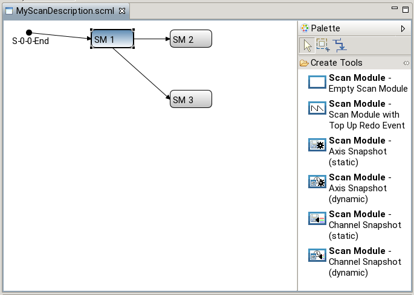
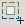
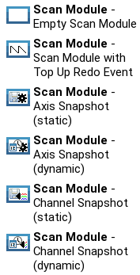
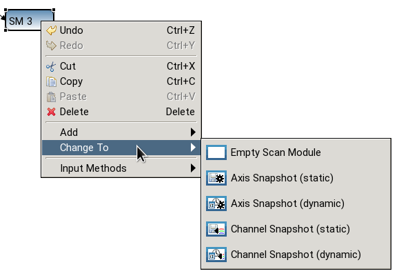
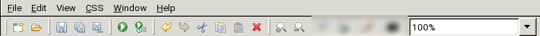
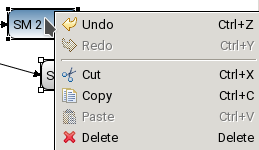
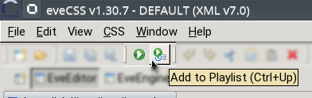

The Scan Description Editor shows the graphical representation of a scan. Each chain of s scan is represented by a start event and scan modules connected by arrows. Below is an example of a scan description editor showing a scan with a chain containing three scan modules:

Appended scan modules always have their origin on the right edge of a scan module. Arrows to nested scan modules always start from the bottom. More information about scan modules is found here.
Multiple scan descriptions can be open simultaneously. They are arranged in tabs.
On the right a palette with different tools is shown (it must be expanded on the very first start of the application). Depending on the active tool different interactions with the graphical objects are possible.
| Selection Tool | select and move scan modules | |
|  | Marquee Tool | draw a bounding box (multi select) |
| Connection Tool | connect scan modues | |
|  | Create Tools | create scan modules (with different content) |
Most of the Views in the EveEditor Perspective are context sensitive, i.e. depending on the current selection different content is shown. In the Scan Description Editor scan modules can be selected with the Selection Tool. The selection is represented by a frame border and a color change. The ScanModuleView then shows the properties of this selected module.
With a „shift click” scan modules could be added to the selection. When multiple scan modules are selected one of them is the primary selection (used for context sensitive views).
The selection tool is also used to move scan modules. When holding the left mouse button the selected modules can be moved by dragging.
Connections can also be moved to other anchor points of scan modules by dragging them.
With the Marquee tool a rectangle is created selecting everything inside of it. Afterwards the selection tool is enabled automatically.
With the Connection tool connections between scan modules (which do not already have appended, nested or parent connections) can be created. When hovering scan modules possible connection points are highlighted. The first click creates the starting point of a connection, the second click finished it.
Create tools create scan modules of different types. The type of a scan module can also be changed (later) with the help of the „Change To” context menu:

The Scan Description Editor also contains tools common to most editors. They are available in the toolbar:

and context menu:

Scans can be send to a connected engine (with or without switching perspective)
